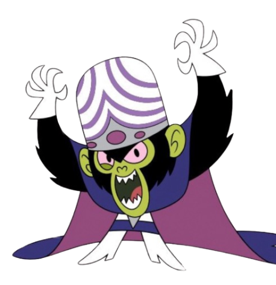
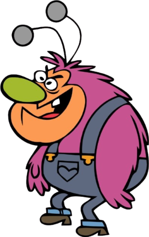
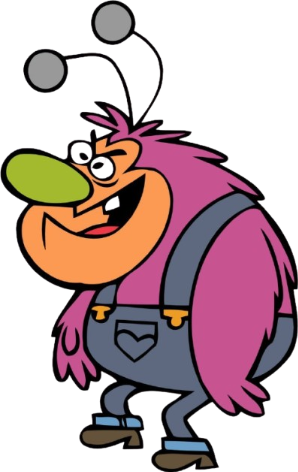
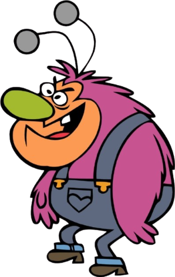

 


Quer dominar Townsville e provar que é o maior gênio do mundo. Porém, seu ego enorme, a mania de explicar demais e sua confiança exagerada em invenções acabam sempre arruinando seus planos.
Busca espalhar medo e manipular emoções para gerar caos total. Apesar de poderoso, sua fraqueza aparece quando as meninas se unem, pois a força emocional delas quebra sua influência.
Só quer proteger seu cantinho na floresta e viver em paz, mas seu temperamento explosivo faz tudo virar caos. Sua maior fraqueza é ser facilmente provocado e perder o controle quando mexem nas coisas dele.